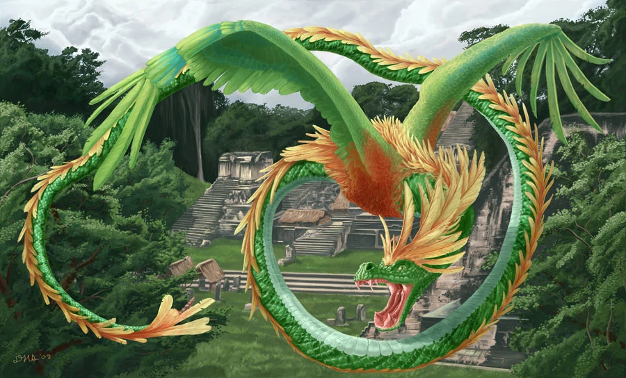
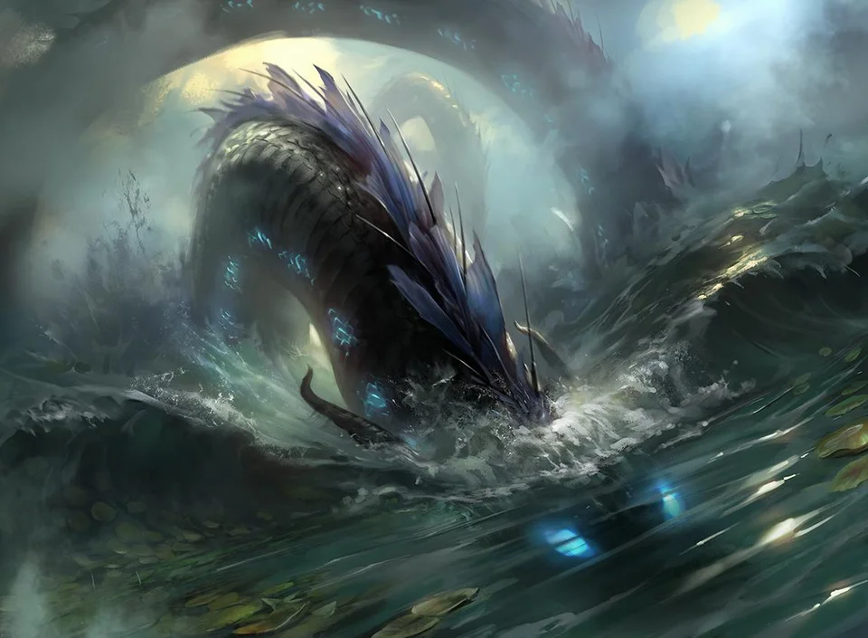

Wyrms (alternatively wurms, worms or orms) are serpentine dragons, normally of European origins. The word (derived from the Norse 'ormr') used to mean all dragons (or all dragons known in Europe/European dragons), but in modern use it is reserved for dragons with 'wormlike' qualities: a long body shape which is either legless or with small legs. Wyrms in Britain include the Lambton Worm and the Laidly Worm of Bambrough, as well as many more wyrm legends that go by other names: in Sussex, deep pools in the ground are inhabited by wyrms called knuckers. In Wales, the wyrms are called anfanc, and in Scotland they may be called beithir.
QUETZALCOATL The name Quetzalcoatl literally means "feathered snake". The Nahuatl word quetzalli means "long green feather" (Molina: ), but later came to be applied also to the bird who give these feathers: the Resplendent Quetzal. Quetzal feathers were a rare and precious commodity in the Aztec culture. So the combination of quetzalli "precious feather" and coatl "snake" has often been interpreted as signifying a serpent with the feathers of Quetzal. The meaning of his local name in other Mesoamerican languages is similar. The Maya of Yucatan knew him as Kukulk'an; the K'iche-Maya of Guatemala, as Guk'umatz, both names can be translated as "feathersnake".The Feathered Serpent deity was important in art and religion in most of Mesoamerica for close to 2,000 years, from the Pre-Classic era until the Spanish conquest. Civilizations worshipping the Feathered Serpent included the Olmec, Mixtec, Toltec, Aztec, who adopted it from the people of Teotihuacan, and the Maya.
SEA SERPENT A sea serpent or sea dragon is a type of dragon sea monster described in various mythologies, most notably Mesopotamian (Tiamat), Judaeo-Christian (Leviathan), Greek (Cetus, Echidna, Hydra, Scylla), and Norse (Jormungandr).The Drachenkampf mytheme, the chief god in the role of the hero slaying a sea serpent, is widespread both in the ancient Near East and in Indo-European mythology, e.g. Lotan and Hadad, Leviathan and Yahweh, Tiamat and Marduk, Illuyanka and Tarhunt, Yammu and Baal in the Baal Cycle etc. The Hebrew Bible also has less mythological descriptions of large sea creatures as part of creation under God's command, such as the Tanninim mentioned in Book of Genesis 1:21 and the "great serpent" of Amos 9:3. In the Aeneid, a pair of sea serpents killed Laocoon and his sons when Laocoon argued against bringing the Trojan Horse into Troy.
In Norse mythology, Jormungandr (or Midgardsormr) was a sea serpent so long that it encircled the entire world, Midgard. Some stories report of sailors mistaking its back for a chain of islands. Sea serpents also appear frequently in later Scandinavian folklore, particularly in that of Norway.
BACK TO MAP